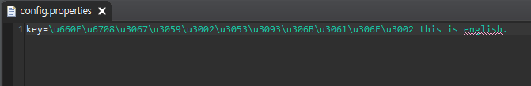
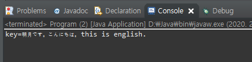
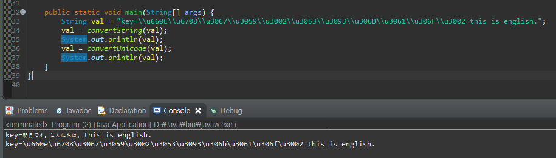

[Java] 日本語をユニコードに変換して、ユニコードから日本語に変換する方法
こんにちは。明月です。
この投稿はJavaで日本語をユニコードに変換して、ユニコードから日本語に変換する方法に関する説明です。
Javaのプロパティや様々の設定ファイル、HtmlのJsonコードなどで「\uxxxx」の形のコードを使う時があります。

「\uxxxx」はユニコードですが、英語や数字、つまりasciiコードの以外はユニコードで表示することです。グーグルで検索してユニコードをエンコードまたはデコードするライブラリやソースがありません。
私の検索能力が悪い可能性もありますが、一応私の場合はありませんでした。
先はこのユニコードに関して確認しましょう。
key=\u660E\u6708\u3067\u3059\u3002\u3053\u3093\u306B\u3061\u306F\u3002 this is english.
英語とasciiコードは変換なしでそのまま表示されます。日本語になっている部分は「\u」が付けていて4文字の16進数コードになりました。
6^4+16^3+16^2+16^1の組み立てです。
// ユニコードをStringに変換
public static String convertString(String val) {
// 変換する文字を格納するバッファに宣言
StringBuffer sb = new StringBuffer();
// 文字を一々探索する。
for (int i = 0; i < val.length(); i++) {
// 組み立てが「\u」に始まると6文字を読み込む。
if ('\\' == val.charAt(i) && 'u' == val.charAt(i + 1)) {
// その後の４文字はユニコードの16進数コードだ。intタイプに変換してcharタイプに強制変換する。
Character r = (char) Integer.parseInt(val.substring(i + 2, i + 6), 16);
// 変換する文字をバッファに入れる。
sb.append(r);
// forの増加値を５を加算して総6を増加
i += 5;
} else {
// asciiコードならそのままバッファに入れる。
sb.append(val.charAt(i));
}
}
// 結果をリターン
return sb.toString();
}

ユニコードが日本語に変換されてコンソールに表示しました。
また、これをユニコードに変換する関数を作成しましょう。実は私が必要な関数はユニコード変換する関数です。
// Stringからユニコードに変換
private static String convertUnicode(String val) {
// 変換する文字を格納するバッファ宣言
StringBuffer sb = new StringBuffer();
// 文字を一々探索する。
for (int i = 0; i < val.length(); i++) {
// 文字抽出をintタイプに持ち込む。
int code = val.codePointAt(i);
// 128以下ならasciiコードに変換しない。
if (code < 128) {
sb.append(String.format("%c", code));
} else {
// 16進数ユニコードに変換する。
sb.append(String.format("\\u%04x", code));
}
}
// 結果リターン
return sb.toString();
}
public static void main(String[] args) {
String val = "key=\\u660E\\u6708\\u3067\\u3059\\u3002\\u3053\\u3093\\u306B\\u3061\\u306F\\u3002 this is english.";
val = convertString(val);
System.out.println(val);
val = convertUnicode(val);
System.out.println(val);
}

最初、日本語に変換する前のユニコードと同じ結果になりました。eclipseのpropertiesファイルで自動変換する値が出ました。大文字、小文字の差異はありますが、フォーマットは「%04x」から「%04X」にかわれば大文字に変わります。
ここまでJavaで日本語をユニコードに変換して、ユニコードから日本語に変換する方法に関する説明でした。
ご不明なところや間違いところがあればコメントしてください。
「Devlopment note / Java」の他投稿
- [Java] HttpConnectionを利用してウェブページを取得する方法2020/05/20 23:53:24
- [Java] Jsoupを利用してXMLファイル(HTML)を扱う方法2020/05/19 19:32:21
- [Java] 日付フォーマット(SimpleDateFormat)を使う方法2020/03/25 00:36:53
- [Java] サーブレット(Servlet)の環境でファイルアップロード(プログレスバーでファイルアップロード状態を表示する方法)する方法2020/03/24 00:48:21
- [Java] Spring環境でファイルアップロード(プログレスバーでファイルアップロード状態を表示する方法)する方法2020/03/22 23:15:12
- [Java] FTPに接続してファイルをダウンロード、アップロードする方法(FTPClient)2020/03/20 02:44:36
- [Java] JSPのSpring環境でschedulerのcronを使う方法2020/03/18 00:24:32
- [Java] POIを利用してExcelを扱う方法2020/03/17 01:48:00
- [Java] PDFを出力する方法(itextpdf)2020/03/13 00:47:31
- [Java] ログライブラリ(log4j)を使う方法2020/03/12 00:54:39
- [Java] Jsonタイプのデータを使う方法(Gsonライブラリ)2020/03/11 00:30:15
- [Java] Base64をエンコード、デコードする方法2020/03/09 10:24:01
- [Java] cmdコマンドを実行するための方法2020/03/06 18:01:10
- [Java] メール(javax.mail)を発送する方法2020/03/05 20:07:49
- [Java] クラス複製(Clonable, Reflection)2020/03/05 00:03:19
最新投稿
- [Python] 07. globalとnonlocal2020/06/03 20:34:49
- [Python] 06. 関数(function) - インライン関数、callbak、ラムダ(lambda)そしてクロージャ2020/06/02 20:51:22
- [Python] 05. コンプリヘンション(Comprehension)を使用する方法2020/06/01 19:38:58
- [Python] 04. 制御文(if, while, for, break, continue)とインデント2020/05/29 21:09:08
- [Python] 03. Pythonでリスト(list)とタプル(tuple)、そしてディクショナリ(dictionary)、セット(set)2020/05/27 18:49:08
- [Python] 02. データタイプ、変数宣言そしてコメントする方法2020/05/26 18:16:52
- [Python] 01. Python3をインストールする方法(Anacondaインストール)2020/05/25 19:02:44
- [Java] HttpConnectionを利用してウェブページを取得する方法2020/05/20 23:53:24
- [Java] Jsoupを利用してXMLファイル(HTML)を扱う方法2020/05/19 19:32:21
- [C#] 非同期ソケット通信(IOCP)-APMパターン2020/05/18 18:45:37
- [C#] 非同期ソケット通信(IOCP)-EAPパターン2020/05/15 19:31:02
- [C#] ソケット(Socket)通信をする方法2020/05/13 17:37:13
- [C#] NPOIを利用してExcelを読み込んで出力する方法2020/05/08 10:43:52
- [C#] NPOIライブラリを利用してエクセルファイルを生成する方法2020/05/07 01:49:01
- [C#] Geckoライブラリを利用してウェブスクレイピングする方法2020/05/05 00:52:26